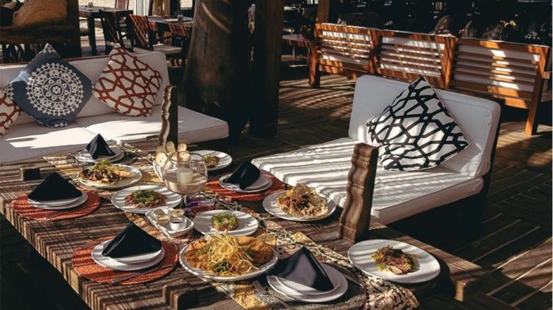
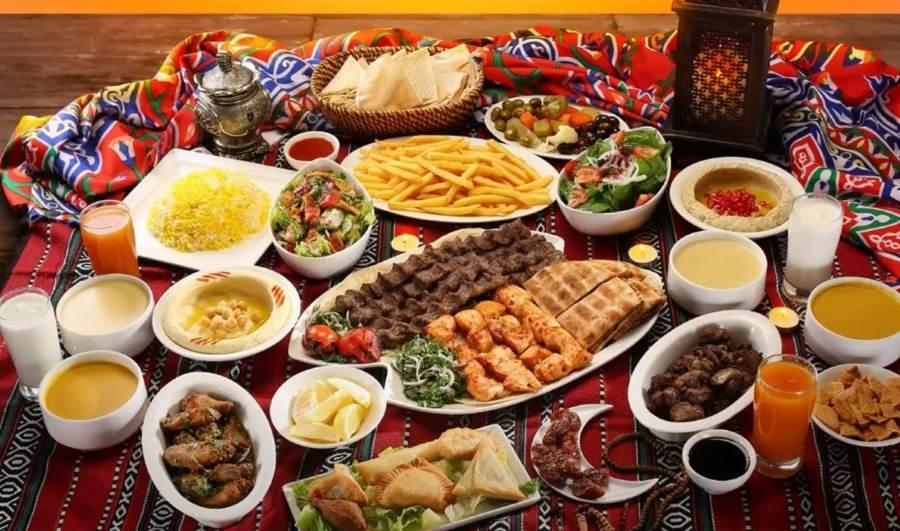

رجوع ←
قرية ذي عين
قرية ذي عين التاريخية من أشهر معالم الباحة، وتقع قرب المخواة، وتتميز ببيوتها الحجرية وينبوعها المعروف وطابعها التراثي الجميل.
مقاهي ذي عين

Ain Café
كوفي قريب من الأجواء التراثية ومناسب للاستراحة.
📍 الموقع
Stone Café
مقهى بإطلالة جميلة على المنطقة المحيطة.
📍 الموقع
Heritage Lounge
جلسات بطابع تراثي ومشروبات متنوعة.
📍 الموقعMarble Village Café
إطلالة جميلة على القرية الرخامية.
📍 الموقعVillage Brew
قهوة مختصة وأجواء هادئة.
📍 الموقعSpring Coffee
كوفي قريب من النبع والمنطقة الزراعية.
📍 الموقعTerrace Cup
جلسات خارجية وإطلالة لطيفة.
📍 الموقعQuiet Bean
مكان هادئ مناسب للاسترخاء.
📍 الموقعWadi Roast
أجواء لطيفة وقهوة متنوعة.
📍 الموقعEvening Spot
جلسات مسائية جميلة بطابع محلي.
📍 الموقع
مطاعم ذي عين

مطعم ذي عين الشعبي
أكلات شعبية محلية بطابع جميل.
📍 الموقع
مطعم الواحة
أطباق متنوعة وجلسات جميلة.
📍 الموقع
مطعم القرية
مطعم بإطلالة جميلة على القرية.
📍 الموقع
Maestro Pizza
بيتزا بعجينة طازجة.
📍 الموقعمطعم السراة
أكلات متنوعة وأجواء جميلة.
📍 الموقع
مطعم الجبل
مطعم بإطلالة رائعة.
📍 الموقع
Redan Restaurant
مطعم عربي معروف.
📍 الموقع
حدائق ومعالم ذي عين

قرية ذي عين التاريخية
أشهر معالم المنطقة وتعود بيوتها الحجرية لقرون مضت.
📍 الموقع
نبع ذي عين
النبع الذي اشتهرت به القرية وسميت باسمه.
📍 الموقع
مزارع الموز
مزارع محيطة بالقرية تضيف جمالًا للمشهد الطبيعي.
📍 الموقعمطل القرية
إطلالة جميلة على البيوت الحجرية والجبال.
📍 الموقعالمسجد التاريخي
من معالم القرية القديمة ومحيطها التراثي.
📍 الموقعالممرات الحجرية
ممرات جميلة بين البيوت القديمة.
📍 الموقعالمزارع المدرجة
منظر زراعي جميل يحيط بالقرية.
📍 الموقعالوادي المحيط
طبيعة هادئة ومشهد جميل بالقرب من القرية.
📍 الموقعموقع التصوير البانورامي
أفضل مكان لالتقاط صور القرية من بعيد.
📍 الموقعالمزارع المحيطة بالنبع
أجواء ريفية جميلة ومنعشة.
📍 الموقع
فعاليات ذي عين

الجولات التراثية
استكشاف البيوت الحجرية والموقع التاريخي.
📍 الموقع
التصوير السياحي
موقع مميز لعشاق التصوير والمناظر الطبيعية.
📍 الموقع
الجولات الزراعية
استكشاف المزارع والنبع والمنطقة المحيطة.
📍 الموقعالأنشطة العائلية
زيارات مناسبة للعائلات والأطفال.
📍 الموقعالهايكنج الخفيف
مشي خفيف واستكشاف المناظر المحيطة.
📍 الموقعالفعاليات التراثية
أنشطة مرتبطة بتاريخ القرية وطابعها المحلي.
📍 الموقعاستكشاف المسجد القديم
معلم تاريخي ضمن الجولة داخل القرية.
📍 الموقعرحلات اليوم الواحد
زيارة سريعة وممتعة للقرية والمواقع المحيطة.
📍 الموقعالتعرف على المعمار القديم
تجربة ممتعة لعشاق التراث والعمارة.
📍 الموقعاستكشاف الينبوع
موقع طبيعي مرتبط باسم القرية وتاريخها.
📍 الموقع